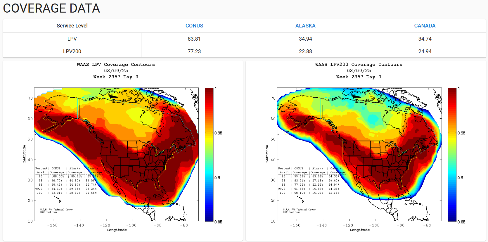

Weekly Highlights 20250305-20250312
3/6-3/7 - Bias Trips
- 3/6 00:16 - MTP WRE Bias trip
- 3/6 16:15 - MSD L1/L2 Bias trip for PRN 34
- 3/7 15:01 - MPR L1/L2 Bias trip for PRN 31
3/7 - HNL WRE-C Fault
- 3/7 01:58 - HNL WRE-C Faulted with SE 52,53,59 External Ref Fault; Freq Std alarm code F3 - Ionizer Filament; set to Maintenance and restored to Normal at 3/7 02:34 but F3 alarm code still running...
- 3/7 15:09 - HNL WRE-C Control Powered to clear Freq Std alarm code F3; restored to Normal at 3/7 15:57
3/7 - Mexico Ring 1 Work
- 3/7 15:54 - Initial troubleshooting on Mexico Ring
1 circuits at ZTL in advance of new comm support
call...
- VLAN tags altered on ZTL and remote MX routers, except MSD due to concurrent comm outage
- Further action needed to change MSD ACS-A vlan tag...
- 3/11 16:19 - MMX Ring 1 Serial reconnected at ZTL in preparation for troubleshooting support
3/9 - G2 Geomagnetic Storm
- 3/9 - WAAS Coverage impacted due to G2 Geomagnetic Storm

3/10 - YQX WRE-C Fault
- 3/10 22:00 - YQX WRE-C Faulted with SEs 52, 53, 59 indicating Freq Std (Alarm Code 7); Control Powered and restored to Normal at 3/10 22:37
3/12 - SE 732 Received for All C&Vs
- 3/12 10:40 - All C&Vs alarmed with SE 732
Subframe Data Err PRN 1; SEs rescinded after 5
minutes
- per TIB:
This significant event indicates the issue number for the current subframe of a GPS satellite differs from its previous broadcast yet the current subframe data is identical to the previously broadcast data.
- per TIB:
Various Comm Impacts
* Only captures major / long-term comm outages
MX Comms
- 3/6 06:33 - MTP Ring 1 comms down hard; line cleared at 3/6 10:39 (~4h 6m)
- 3/7 09:19 - MSD Ring 1 comms down hard; line cleared at 3/7 18:59 (~9h 39m)
- 3/10 23:39 - MSD Ring 1 comms down hard; line cleared at 3/10 23:49 (~9m 57s)
- 3/11 06:23 - MTP Ring 1 comms down hard; line cleared at 3/11 09:19 (~2h 56m)
- 3/12 06:09 - MPR Ring 1 comms down hard; line cleared at 3/12 07:39 (~1h 29m)
- 3/12 07:13 - MSD Ring 1 comms down hard; line cleared at 3/12 10:19 (~3h 6m)
Other Sites
- 3/5 02:00 - ZSU Ring 1 ALT / Ring 2 PRI comms down hard; both lines cleared at 3/5 02:07 (~6m 43s)
- 3/6 08:02 - ZOA Ring 1 ALT / Ring 2 PRI comms down
hard for
MR-186830 ZLA<>ZOA Net-1 ALT L3Harris tech will be onsite to Transition from C15310 to FW4100-- ref LIR 942644624; both lines cleared at 3/6 09:31 (~5390 seconds) - 3/7 16:57 - YYR Ring 1 comms down hard; line cleared at 3/7 17:03 (~366 seconds)
- 3/9 02:02 - CDB Ring 2 comms flapping; last event cleared at 3/10 10:22 (~56122 seconds total)
- 3/9 12:11 - CDB Ring 1 comms flapping; last event cleared at 3/9 14:20 (~1876 seconds total)
- 3/10 05:04 - BRW Ring 2 PRI comms flapping; last event cleared at 3/10 15:52 (~1158 seconds total)
- 3/10 05:08 - BRW Ring 1 ALT comms flapping; last event cleared at 3/10 15:38 (~969 seconds total)
- 3/10 16:14 - CM1 Ring 2 PRI comms flapping; last event cleared at 3/10 23:10 (~1287 seconds total)
- 3/11 05:50 - ZMP Ring 1 ALT / Ring 2 PRI comms down hard; both lines cleared at 3/11 06:33 (~2577 seconds)
- 3/11 15:14 - YQX Ring 1 comms down hard; line cleared at 3/12 06:30 (~15h 16m)
- 3/11 17:08 - CM1 Ring 1 PRI comms flapping; last event cleared at 3/11 22:46 (~3447 seconds total)
- 3/12 08:16 - CM1 Ring 1 PRI / Ring 2 ALT comms; both lines cleared at 3/12 12:11 (~14074 seconds)
Mexico Ring 2 Down Hard...
- 12/18 17:26 - MMX Ring 2 down hard...
- 12/6 17:27 - MMD Ring 2 comms down hard...
- MSD mostly Down with short (~1m) flips to Up, but down hard since 12/23 02:38...
OTZ Ring 2 PRI / ALT
- 9/18 23:57 - OTZ Ring 1 ALT comms
connected after circuit validation
- Currently the wrong circuit (*508) is being used for OTZ Ring 2 ALT and *509 is connected on OTZ Ring 2 PRI
- FTI is troubleshooting the *509 circuit -- ref LIR 69611621
- Intial alarm light on DNX1U has cleared as of 10/1; further troubleshooting from FTI has not resolved issue...
- FTI has tested and re-terminated at ZLA. FTI needs a technician dispatched to OTZ to reset some equipment. Date has not been determined.
List of current offline WREs
List of current offline WREs -- ref WAAS Status Monitor
All Depot shipments to Mexico are halted until the customs process can be finalized
- MTP WRE-B - 11/18/24-... - Receiver inits failing -- ref LIR 898330924
- MMX WRE-A - 10/13/24-... - Freq Std failed -- ref LAD 879853824
- MMX WRE-C - 5/15/24-... - Processor failed and could not be restored -- ref LIR 798352224
- MPR WRE-B - 5/3/24-... - Inits failing -- looks like a bad freq std; due to shipping issues, there is no spare Freq Std and no ETA to recover WRE-B... -- ref LIR 44170821
5/11/23-... - MX Ring 2 Satcom Upgrade
- 5/11/23 17:01 - MX Ring 2 SatCom upgrade begins; MX Ring 2 OFFLINE until upgrade troubleshooting is complete
All sites are currently connected through Tijuana with new cables; but still large UDP data packets (WAAS Multicast) being dropped on Ring 2 -- no further actions to take at Tijuana
- All MX Ring 2 currently down with no ETA...
-
WAAS Second Level assessing situation before further troubleshooting...

Major Events


Core I/F Status

Comm Events

Mexico Comm Status